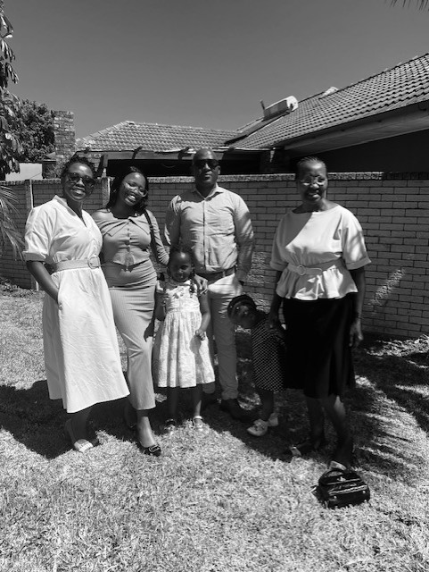

At meals & Wheels, we're dedicated to nourishing our community, one meal at a time.Our mission is to
provide nutricious meals and supportive services to individuals in need, fostering health, dignity
and connection. With the help of our volunteers, donors, and partners, we're making a difference
in the lives of those who need it the most. Join us in our efforts to fuel bodies, warm hearts, and build
a stronger community. Together, we can serve up more than just a meal, we can serve hope, compassion, and
a sense of belonging.Every meal,delivered, every conversation had, and every moment shared brings us closer
to creating a more caring and connected community. Your support can help us continue to make a meaningful
impact in the future. As we work towards a future where everyone has access to nutricious food and supportive
services, we invite you to be part of our journey. Whether you're able to volunteer your time, donate
resources throughout our community. By providing more than just a meal, we're offering a lifeline to those
who need it most, and helping to build a stronger, more nourished, supportive, and uplift our community,
one meal at a time.
FOUNDERS|| OF|| THE || NGO
